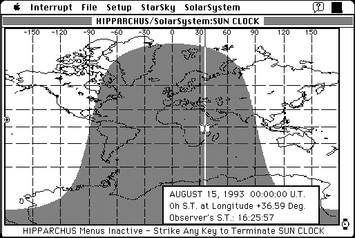

Download
HIPPARCHUS_521a_68K.zip (655K) HIPPARCHUS 5.2.1a repackaged into a zipped hfs disk image and checksum file. The disk image can be mounted with Mini vMac.
HIPPARCHUS_521a_68K.sea.hqx (983K) HIPPARCHUS 5.2.1a in the original format.
copyright: sofTouch APpLications
mod date: Jul 21, 1998
license: shareware
official url :
sofTouch APpLications - HIPPARCHUS 5.2.1a
(download link broken)
"Fully integrated software package for positional astronomy". Can "prepare annotated astronomical finder charts , investigate a historical syzygal alignment of the planets," and "obtain instantaneous topocentric views of the sky", for example. By Glenn Schneider, who works at "University of Arizona's Steward Observatory".

If you find these downloads useful, please consider helping the Gryphel Project, which hosts them.
Here are the md5 checksums for the downloads, signed with Gryphel Key 5:
--------- GRY SIGNED TEXT --------- 3948c30cc9d4f53899948c6b482ee26b HIPPARCHUS_521a_68K.zip d123fb9b71ec2e3c06b76a6740177b71 HIPPARCHUS_521a_68K.sea.hqx ------- BEGIN GRY SIGNATURE ------- Gry/4Xa8CFcUzxdN/BezUZQw3cGSvod+m1ZE/CouIdMj21ZOP6FcC+or/ieJGWFE q2dw13qsDtnj65tmqRxvsyeXkOU+p8eCKaAnCUwP6zXtU+3zm1LpbSqfLlVbRW31 KcleTx4TcTGldrW4dMFnd/0ePV0Q32rxwtUblo9aDNsp2PLNHSLytCsTeHmtYLG6 -------- END GRY SIGNATURE --------